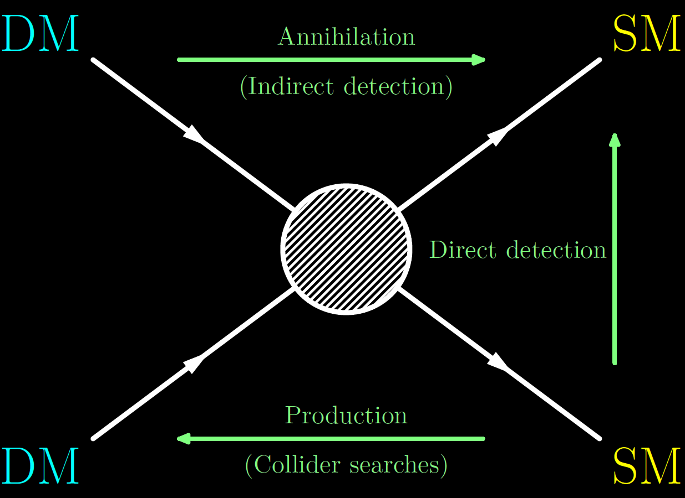
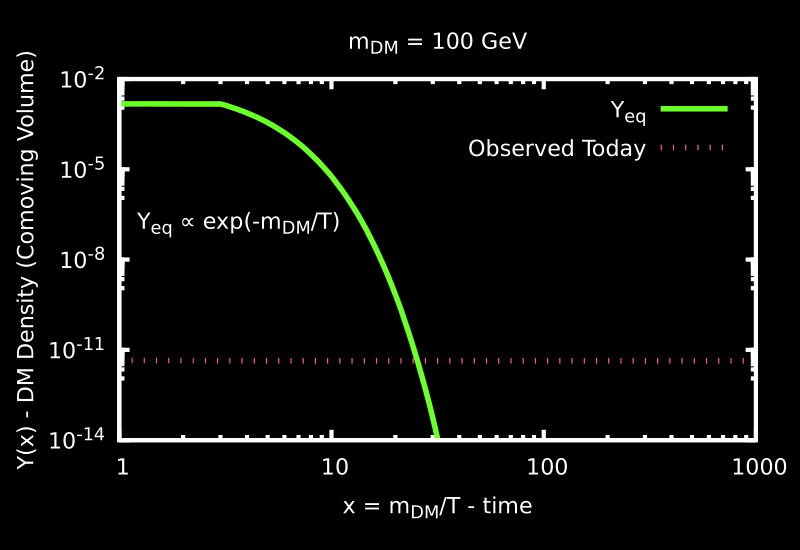
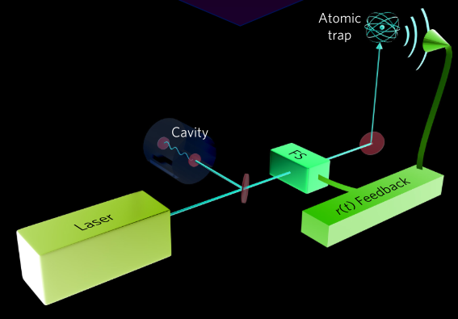

# Enlightening the search for Dark Matter <br> <div class="r-stretch"></div> ### Benjamin M. Roberts #### _Brisbane, QLD, 21 August 2023_ <!-- <br> --> <!-- #### University of Queensland, Australia --> <br> <!-- <br> --> <img src="img/uq-logo.svg" width="30%"> <br><br>
# Current Theory of the Universe <!-- ## 1. The Standard Model --> <br> <div style="text-align: center; float: left; width: 40%"> <img src="https://upload.wikimedia.org/wikipedia/commons/2/2b/Standard_Model_of_Elementary_Particles_dark.svg" width="70%"><br> <font size="3"> Credit: Cush [Wikimedia Commons]</font> <br><br> <br> </div> <div style="text-align: left; float: right; width: 57%"> <h2>Standard Model</h2> <br> <h3> • Quantum theory of particles and interactions</h3> <div class="fragment" data-fragment-index="1"> <h3> • Electromagnetic, Nuclear Weak, Strong forces</h3> </div> <br> <h3 class="fragment" data-fragment-index="2"> • Explains phenomenon with extreme precision</h3> <h3 class="fragment" data-fragment-index="3"> • Predicted new particles: Higgs Boson (CERN 2012)</h3> <br><br> <br> <div class="fragment" data-fragment-index="4"> <h2>General Relativity</h2> <br> <h3> • Einstein's theory of gravity and spacetime</h3> <br> <h3 class="fragment"> • Gravitational Lensing</h3> <h3 class="fragment"> • Gravitational Waves (LIGO 2016)</h3> </div> </div>
# The Standard Model + General Relativity <br><br><br> <div class="fragment"> <h2>Extremely successful theories</h2> </div> <br><br><br> <div class="fragment"> <h2>However....</h2> </div> <br><br><br> <div class="fragment"> <h2>Several deep inconsistencies with the observed universe</h2> </div> <!-- <div style="text-align: left; float: right; width: 47%"> <h2>Tested with extraordinary precision</h2> <br> <h3> • e.g., electron magnetic moment, Higgs boson</h3> <h3> • gravitational lensing, gravitational waves</h3> <br><br><br> <h2>However...</h2> <br><br><br> <div class="fragment"> <h2>Several deep inconsistencies</h2> <h2>with the observed universe</h2> </div> </div> -->
# Unexplained Mysteries <br> <div style="text-align: center; float: left; width: 70%"> <div class="fragment" data-fragment-index="0" style="text-align: left;" data-markdown> <h2>Why is there so much more matter than anti-matter?</h2> <h3> • There should have been equal amounts created </h3> </div> <br> <div class="fragment" data-fragment-index="1" style="text-align: left;" data-markdown> <h2>Quantum theory for gravitation?</h2> <h3> • Quantum mechanics and general relativity incompatible </h3> </div> <br> <div class="fragment" data-fragment-index="2" style="text-align: left;" data-markdown> <h2>Dark energy?</h2> <h3> • Explain accelerating expansion of the Universe </h3> </div> <br> <div class="fragment" data-fragment-index="3" style="text-align: left;" data-markdown> <h2>Dark Matter</h2> <h3> • Missing mass in galaxies </h3> </div> </div> <div style="text-align: left; float: right; width: 30%"> <br><br><br><br><br><br> <img class="fragment" data-fragment-index="2" src="img/dm-pie.jpg" width="95%"> </div>
# First Evidence for Dark Matter <br> <div style="text-align: center; float: left; width: 40%"> <br> <h3>Coma Cluster</h3> <br> <img src="https://upload.wikimedia.org/wikipedia/commons/7/7d/Ssc2007-10a1.jpg" width="100%"> <font size="3"> Sloan Digital Sky Survey + Spitzer Space Telescope [NASA / JPL-Caltech / L. Jenkins]</font> </div> <div style="text-align: left; float: right; width: 55%"> <h2>First major hints: galaxy clusters</h2> <br> <h3 class="fragment"> • Fritz Zwicky: Clusters of galaxies observed to be too fast</h3> <h3 class="fragment"> • Could not be explained by gravity from visible matter</h3> <h3 class="fragment"> • Perhaps invisible matter</h3> <h3 class="fragment"> • Zwicky: Termed phrase "dark matter"</h3> <br> <!-- <p>(And some even earlier hints)</p> --> <br> <div class="fragment"> <h2>Dark Matter</h2> <br> <h3>Invisible Matter: interacts gravitationally,</h3> <h3>but not with light*</h3> <br> <h4 class="fragment">*or, just very weakly</h4> </div> </div>
# Then: things changed <br><br> <div style="text-align: center; float: left; width: 45%"> <img src="img/vera-rubin.jpg" width="95%"><br> <font size="3"> [AIP Emilio Segrè Visual Archives, Rubin Collection] </font> </div> <div style="text-align: left; float: right; width: 45%"> <h2>Major breakthrough</h2> <br> <br> <h3>Vera Rubin, along with Kent Ford in the 1970s</h3> <br> <h3>Careful measurements of individual galaxies</h3> <br> <br> <h3 class="fragment">Their (and following) work showed:</h3> <br> <br> <h3 class="fragment">Dark Matter was <i><b>everywhere</b></i></h3> <br> <br> <h3 class="fragment">And there was <i><b>lots</b></i> of it</h3> <br> <!-- <h3 class="fragment"> Fundamental shift in understanding of the Universe</h3> <br> --> </div>
# Galactic Rotation Curves ## _all_ galaxies: stars move faster (left) than predicted (right) <video width="80%" controls playsinline autoplay muted loop> <source src="https://upload.wikimedia.org/wikipedia/commons/4/4c/Comparison_of_rotating_disc_galaxies_in_the_distant_Universe_and_the_present_day.webm" type="video/webm"></video><br> <font size="3">[ESO/L. Calçada, Creative Commons]</font>
# Galactic Rotation Curves <div style="text-align: center; float: left; width: 70%"> <br><br> <img src="https://upload.wikimedia.org/wikipedia/commons/c/cd/Rotation_curve_of_spiral_galaxy_Messier_33_%28Triangulum%29.png" width="95%"><br> <font size="3">[Mario De Leo, Wikimedia Commons]</font> </div> <div style="text-align: left; float: right; width: 30%"> <br><br> <h2>Missing Matter?</h2> <br> <p data-markdown>• Not a small correction</p> <br> <p data-markdown>• 80 - 95% of mass is "missing"</p> <br> <div data-markdown class="fragment fade-in"> <p data-markdown>• Implies <font color="orange">dark matter</font></p><br> \[a = \frac{G \, [M(r) + {\color{orange}\delta M(r)}]}{r^2} \] <br> <p data-markdown> • Simulations + observations: DM "halo"</p> </div> <br> <p data-markdown class="fragment fade-in">• ... or <font color="green">modified gravity</font><br><br> \[a = \frac{[G + {\color{green}\delta G(M,r)}] \, M(r)}{r^2} \] </p> <br> </div>
# Evidence builds up <div style="text-align: left; float: left; width: 50%"> <div> <h2> Rotation curves</h2> <h3> • Missing galactic matter</h3> </div> <div class="fragment"> <br> <h2> Gravitational lensing</h2> <h3> • Gravitational bending of light</h3> </div> <div class="fragment"> <br> <h2> Cosmic Microwave Background</h2> <h3> • Gravitational imprint on background radiation</h3> </div> <div class="fragment"> <br> <h2> Baryon Acoustic Oscillations</h2> <h3> • Sound waves (density fluctuations) in matter</h3> </div> <div class="fragment"> <br> <h2> Large-Scale Structure Simulations</h2> <h3> • Dark Matter required to match observations</h3> </div> </div> <div style="text-align: center; float: right; width: 50%"> <br><br> <b>Large-Scale Structure simulation:</b><br><br> <img src="https://upload.wikimedia.org/wikipedia/commons/0/0f/Cosmic_web.jpg" width="90%"><br> <font size="3">[Volker Springel/MPI, Wikimedia Commons]</font> </div>
# Bullet Cluster <div style="text-align: left; float: left; width: 65%"> <br> <!-- <img src="https://upload.wikimedia.org/wikipedia/commons/e/ea/Bullet_cluster.jpg" width="90%"><br> <font size="3">Chandra X-ray Observatory [NASA]</font> --> <div class="r-stack"> <div class="fragment fade-out" data-fragment-index="1"> <img src="https://upload.wikimedia.org/wikipedia/commons/e/ea/Bullet_cluster.jpg" width="100%"><br> <font size="3">Chandra X-ray Observatory [NASA]</font> </div> <div class="fragment fade-in" data-fragment-index="1"> <img src="https://upload.wikimedia.org/wikipedia/commons/a/a8/1e0657_scale.jpg" width="90%"> <font size="3">NASA/CXC/M. Weiss - Chandra X-Ray Observatory</font> </div> </div> </div> <div style="text-align: left; float: right; width: 35%"> <br> <h3>• Colliding galaxy clusters ~ 4 Gyr</h3> <br> <h3>• X-ray emission image:<br> distribution of gas (regular matter)</h3> <br> <h3 class="fragment fade-in" data-fragment-index="0">• Also- Gravitational lensing:<br> distribution of <i>mass</i></h3> <br> <br> <div class="fragment fade-in" data-fragment-index="2"> <h3>Composite image: X-ray + lensing</h3> <br> <h3><font color="pink">• Pink = gas (X-ray)</font></h3> <h3><font color="sky-blue">• Blue = mass (gravitational lensing)</font></h3> <br> <h3 class="fragment fade-in" data-fragment-index="3"> • Frictionless dark matter: <br> passes straight through </h3> </div> </div>
# Cosmic Microwave Background (After removal of doppler dipole) <img src="img/CMB.png" width="80%"> <br> <h3 class="fragment fade-in"> • Temperature anisotropies (scale + distribution) <br> very sensitive to distribution of regular and dark matter </h3>
# Cosmic Microwave Background <iframe width="100%" height="70%" data-src="https://chrisnorth.github.io/planckapps/Simulator/"> </iframe> Credit: Chris North (Cardiff U.) - <a href="https://chrisnorth.github.io/planckapps/Simulator/"> chrisnorth.github.io/planckapps/Simulator</a> <br><br> <div class="fragment"> <h3> ΛCDM model (Λ=dark energy, CDM=cold dark matter)</h3> </div>
# Dark Matter: What we know <br> <h3> There's lots of it</h3> <h3> It gravitationally clusters in halos around galaxies</h3> <h4> (really, galaxies gravitationally cluster around DM)</h4> <div style="text-align: left; float: left; width: 50%" class="fragment"> <br><br> <h2>Very strong evidence:</h2> <br> <h3>• Rotation curves, gravitational lensing, CMB </h3> <br> <h3>• Also: large scale structure, BAO etc. </h3> <br> <h3 class="fragment">• It's not strange for particles to not interact with light (e.g., neutrinos)</h3> <br> <br> <h3 class="fragment">• ΛCDM model works extremely well <br> • Ωc = 0.2589(57) [Planck] </h3> <h3 class="fragment">• (Just need to work out the Λ and CDM parts)</h3> </div> <div style="text-align: center; float: right; width: 50%"> <br><br><br><br> <img src="img/dm-pie.jpg" width="55%"><br> </div>
# Dark Matter: What we don't know <br> <div class="fragment" data-fragment-index="0"> <h2> ... everything else</h2> </div> <br> <!-- <img src="img/DM_masses2.png" width="80%"> --> <div class="r-stack"> <img class="fragment" data-fragment-index="1" src="img/DM_masses2.png" width="80%"> <img class="fragment" data-fragment-index="3" src="img/DM_masses3.png" width="80%"> </div> <div class="fragment" data-fragment-index="1"> <font size="3">US "Cosmic Visions" report [arXiv:1707.04591]</font> </div> <br> <br> <div class="fragment" data-fragment-index="1"> <h3>• Possible mass range: 90 orders of magnitude!</h3> </div> <div class="fragment" data-fragment-index="2"> <h3>• Fundamental particle: 50 orders (de Broglie to Planck)</h3> </div> <br> <div class="fragment"> <h3> • Vast majority of focus on WIMPs, but field is very wide</h3> </div>
# Some guesses <br> ## Assume (guess) that Dark Matter has some (small) ## interaction with regular matter <br><br> <div style="text-align: left; float: left; width: 40%">  </div> <div style="text-align: left; float: right; width: 55%"> <div class="fragment"> <h3> • Not guaranteed, but reasonable</h3> <h3> • Early universe: protons/neutrons/electrons produced</h3> <h3> • Presumably, dark matter produced too</h3> </div> <br> <br> <div class="fragment"> <h3> • Gives simple mechanics for DM production</h3> <h3> • Also: mechanism for DM detection</h3> </div> </div>
# Dark Matter production: WIMP miracle <br> <div class="fragment" data-fragment-index="0"> $$\huge E = mc^2 $$ </div> <!-- <div class="r-stack"> <img class="fragment fade-out" data-fragment-index="0" src="img/DM_masses2.png" width="80%"> <img class="fragment current-visible" data-fragment-index="0" src="img/DM_masses3.png" width="80%"> </div> <div style="text-align: center; width: 50%"> </div> --> <div style="text-align: left; float: left; width: 30%"> <br> <br><br> <div class="fragment" data-fragment-index="1"> <h3> • Early universe: hot and dense</h3> <br> </div> <h3 class="fragment fade-in" data-fragment-index="2"> • Universe cools: Not enough energy to produce DM </h3> <br> <h3 class="fragment fade-in" data-fragment-index="3"> • Universe expands: <br> Shuts off annihilation </h3> <!-- <br> <h3 class="fragment fade-in" data-fragment-index="2"> • Begins in thermal equilibrium </h3> --> </div> <div style="text-align: center; float: right; width: 65%"> <div class="r-stack">  <img class="fragment fade-in" data-fragment-index="3" src="img/YDM/YDM1.png" width="90%"> <img class="fragment fade-in" data-fragment-index="4" src="img/YDM/YDM2.png" width="90%"> </div> <h3 class="fragment fade-in" data-fragment-index="5"> • Weak interaction: predicts this exactly! <br> </h3> <!-- <h3 class="fragment fade-in" data-fragment-index="5"> • Weak interaction ($G_F \simeq 10^{-5}\,{\rm GeV}^{-2}$): new physics scale<br> • $m_{\rm weak} \simeq 100\,{\rm GeV}$ <br> </h3> <h3 class="fragment fade-in" data-fragment-index="5"> • $\langle\sigma v\rangle_{\rm weak} \simeq 3\times10^{-26}\,{\rm cm}^3/{\rm s}$ !!! </h3> --> </div>
<br><br><br><br><br><br><br><br> # Dark Matter Detection
# WIMP Searches: XENON <div style="text-align: left; float: left; width: 60%"> <div class="r-stack"> <div class="fragment fade-out" data-fragment-index="1"> <br><br><br> <br><br> <h3 class="fragment highlight-red" data-fragment-index="0">• Direct detection (scattering)</h3> <h3>• Indirect detection (annihilation)</h3> <h3>• Collider searches (production)</h3> </div> <div> <div class="fragment fade-in" data-fragment-index="1"> <br> <h3>Excluded cross-section for WIMPs:</h3> <img src="img/WIMP-constraints.png" width="100%"> </div> <h3 class="fragment fade-in" data-fragment-index="2"> • Mass below nuclear mass: energy threshold </h3> <h3 class="fragment fade-in" data-fragment-index="2"> • High mass: fewer particles </h3> </div> </div> </div> <div style="text-align: center; float: right; width: 40%"> <img src="img/xenon.png" width="65%"> </div>
# En*light*ening the search for Dark Matter? ## Quantum Physics! <br> <div style="text-align: center; float: left; width: 60%"> <div class="fragment" data-fragment-index="0" style="text-align: left;" data-markdown> <h2> Mass drops below nuclear mass:</h2> <h3> • No nuclear recoils • Instead: electron recoils + ionisation</h3> </div> <br> <div class="fragment" data-fragment-index="1" style="text-align: left;" data-markdown> <h2> Mass drops below electron mass:</h2> <h3> • No electron recoils • Instead: absorption (dark photoelectric effect)</h3> </div> <br> <div class="fragment" data-fragment-index="2" style="text-align: left;" data-markdown> <h2> Mass drops below eV:</h2> <h3> • Classical DM field • Quantum sensing (atomic clocks)</h3> </div> <br> </div> <div style="text-align: center; float: right; width: 40%"> <br> <img class="fragment" data-fragment-index="0" src="img/atom.png" width="40%"> <br><br> <div class="r-stack"> <div class="fragment" data-fragment-index="2"> <img src="img/laser-JILA.jpg" width="90%"><br> <font size="3">[JILA]</font> </div> <div class="fragment" data-fragment-index="3"> <img src="img/Ye_UCBolder-SrLattice.jpg" width="80%"><br> <font size="3">[Ye/UCBolder]</font> </div> </div> </div>
# Atomic Clocks 101: <br> ### Clock: frequency reference + count oscillations <div class="fragment fade-in" data-fragment-index="3"> <h3> Best atomic clocks approach accuracy: $\delta f/f \sim 10^{-19}$ </h3> </div> <br> <br> <div class="fragment fade-in" data-fragment-index="0" style="text-align: center; float: left; width: 32%"> <img src="img/Bohr.png" width="70%"><br> <font size="3"> JabberWok [Wikimedia Commons]</font> <br> <h3> Atomic transition: "perfect*" frequency reference </h3> </div> <div class="fragment fade-in" data-fragment-index="1" style="text-align: center; float: left; width: 32%">  <font size="3"> Wcislo, Science 2016</font> <br> <h3> Laser: oscillations of light<br> Compare frequency to atomic transition </h3> </div> <div class="fragment fade-in" data-fragment-index="2" style="text-align: center; float: right; width: 32%"> <img src="img/Al+Choi2010.png" width="95%"> <font size="3"> Choi, Phys. Rev. Lett. 2018</font> <br> <h3> Lock on: Adjust laser to maximise transition rate </h3> </div>
# "Listen" for DM field using atomic clocks <br> <div style="text-align: left; float: left; width: 50%"> <br> <br> <br> <font size="3">[N Hanacek/NIST]</font> </div> <div style="text-align: left; float: right; width: 50%"> <br> <div class="fragment"> <h3> • DM with very low mass </h3> <h3> • Very high number density to compensate </h3> <h3> • Behaves like classical field: wave-like </h3> </div> <div class="fragment"> <br> <br> <h3> • Assume: weak interaction with atoms </h3> <h3> • Affect atomic energy levels and frequencies </h3> </div> <div class="fragment"> <br> <br> <h3> • Dark matter causes "wobbles" in frequency </h3> <h3> • Monitor clocks for these wobbles </h3> </div> <br> <!-- <div class="fragment fade-in"> <h3>Observable shift:</h3> <br> \[\huge \frac{\delta f}{f} = \kappa \, \phi_{\rm DM}(\vec{r},t) \] </div> --> <!-- <br> <div class="fragment fade-in"> <h4> • $\kappa$ - model dependent parameter </h4> <h4> • Calculated: high-precision atomic theory </h4> </div> --> <!-- <br> <div class="fragment fade-in"> <h3>Example: variation of constants</h3> <br> \[\huge \mathcal{L} = \phi F_{\mu\nu}F^{\mu\nu} \implies \alpha\to\alpha+\phi_{\rm DM}(\vec{r},t) \] \[\huge \kappa = \frac{{\rm d} f}{{\rm d} \alpha}\frac{\alpha_0}{f_0} \] </div> --> </div>
# Conclusion <div style="text-align: left; float: left; width: 65%"> <br> <h2>Standard Model + General Relativity</h2> <h3> • Extremely successful, but incomplete</h3> <h3> • Our job to search for what's beyond</h3> <br> <h2>Dark Matter</h2> <h3> • Overwhelming evidence: completely in the dark</h3> <h3> • Promising probe for physics beyond Standard Model</h3> <br> <h2>WIMPs</h2> <h3> • Seemingly great candidate...but no evidence</h3> <h3> • Look for lighter DM candidates: quantum sensors</h3> <br> <br> <img src="img/uq-logo.svg" width="32%"> </div> <div style="text-align: left; float: right; width: 35%"> <br><br><br><br><br><br> <img src="img/laser-JILA.jpg" width="99%"><br> <font size="3">[JILA]</font> <!-- <br><br><br><br><br><br><br><br><br><br><br><br><br> --> <!-- <br><br><br> --> <br><br><br><br><br> <h4> Benjamin M. Roberts (<a href="https://broberts.io">www.broberts.io</a>)</h4> <h4> <i>Brisbane, QLD, 21 August 2023</i></h4> </div> <!-- <div class="r-stretch"></div> <br> <img src="img/uq-logo.svg" width="25%"> -->